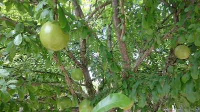

pranet · 出典付きの植物図鑑
フクベノキ ☠
Crescentia cujete L. · Bignoniaceae

Crescentia cujete, commonly known as the calabash tree, is a species of flowering plant. It is a medium-sized tree in the trumpet vine family Bignoniaceae native to the Americas, and which is grown in Africa, Southeast Asia, Central America, South America, the West Indies and extreme southern Florida. It is the national tree of St. Lucia. It is a dicotyledonous plant with simple leaves, which are alternate or in fascicles (clusters) on short shoots. Its fruit is up to 30 cm (12 in) long by 25 cm (9.8 in) wide. According to Bailey, it can occasionally be 45–50 cm (18–20 in) wide. It is naturalized in India. The tree shares its common name with that of the vine calabash, or bottle gourd.
出典: Wikipedia 英語版「Crescentia cujete」 · CC BY-SA 4.0
異名: Crescentia acuminata Kunth, Crescentia angustifolia Willd. ex Seem., Crescentia arborea Raf., Crescentia cuneifolia Gardner, Crescentia fasciculata Miers, Crescentia latifolia Raf., Crescentia plectantha Miers, Crescentia pumila Raf., Crescentia spathulata Miers
同定や利用は自己責任でお願いします。この図鑑だけを根拠に野生の植物を食べないでください。
出典
- 学名: World Flora Online Plant List 2026-06 · CC0 1.0
- 名前: Wikipedia の記事名と Wikidata · CC0 1.0（Wikidata）。記事名は事実
- 説明: Wikipedia 英語版「Crescentia cujete」 · CC BY-SA 4.0
- 食用・毒性: World Checklist of Useful Plant Species (Diazgranados et al. 2020, RBG Kew) · CC BY 4.0
- 分布: World Checklist of Vascular Plants (WCVP), RBG Kew, version 2026-06-04 · CC BY 3.0
このページは pranet のデータから自動生成しています。コードは MIT、データは項目ごとのライセンス（説明）。